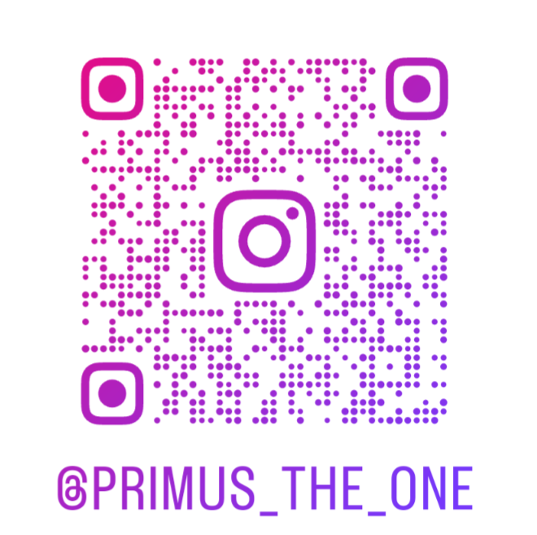

Vedení RUR továrny bylo reportováno detekování neobvyklé aktivity u jednoho z robotů. Je jím robot Primus. Začíná se chovat ekonomicky neproduktivně, opouští pracoviště bez uvedení důvodu a na hodiny i dny mizí neznámo kam. Také byl přistižen při fotografování v továrně RUR, viděn v budovách pasáže Lucerna a bezprostředním okolí. Projevuje celkově méně nadšení a zájmu v pracovním procesu.
Bezpečnostní oddělení se obává nejhoršího: úniku přísně tajných informací ke konkurenci. Podezření ze špionáže je silné.
Poslední vyšetřovatel selhal. Než ale zmizel ze scény, stačil objevit zvláštní instagramový účet, který byl v té době neveřejný.
Zkus zjistit, co robot Primus dělá. Vysleduj jeho pohyb po areálu. Vedení ti bude zavázáno.
R.U.R. factory management has been notified of unusual activity detected in one of its robots. The unit in question is Primus. It has begun exhibiting economically unproductive behaviour — abandoning its post without stated reason and disappearing for hours, sometimes days, to unknown locations. It has also been observed photographing within the R.U.R. facility and sighted in the buildings of the Lucerna passage and its immediate surroundings. It displays markedly reduced enthusiasm and engagement in the work process.
The security division fears the worst: leakage of classified information to a competitor. Suspicion of espionage is high.
The last investigator assigned to the case failed. Before disappearing from the scene, however, they managed to uncover an unusual Instagram account — at the time, set to private.
Determine what robot Primus is doing. Track his movements across the complex. Management will be in your debt.
